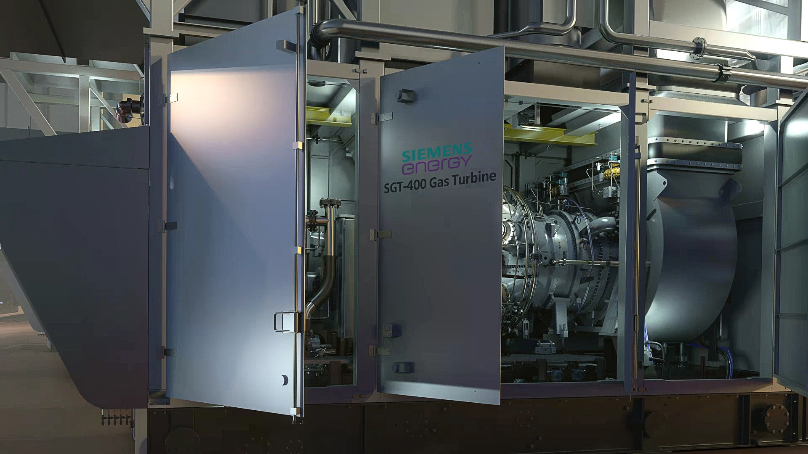
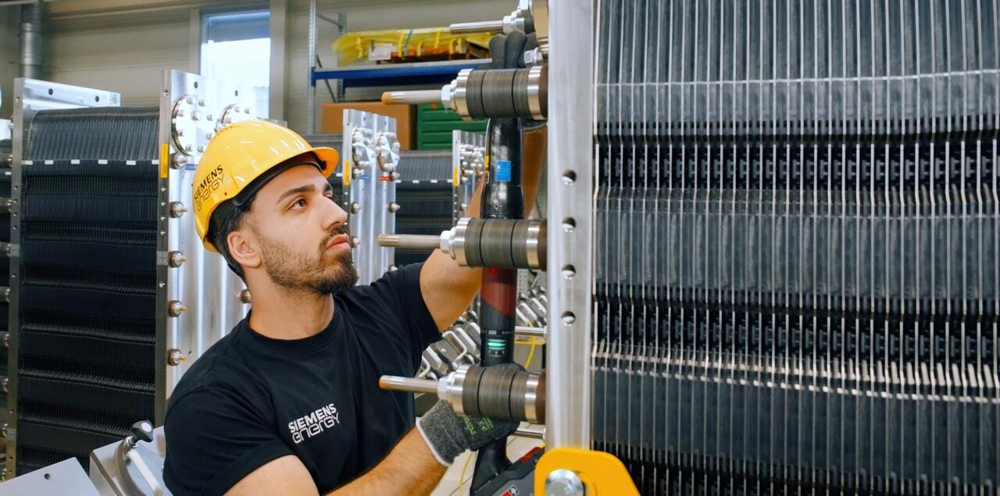
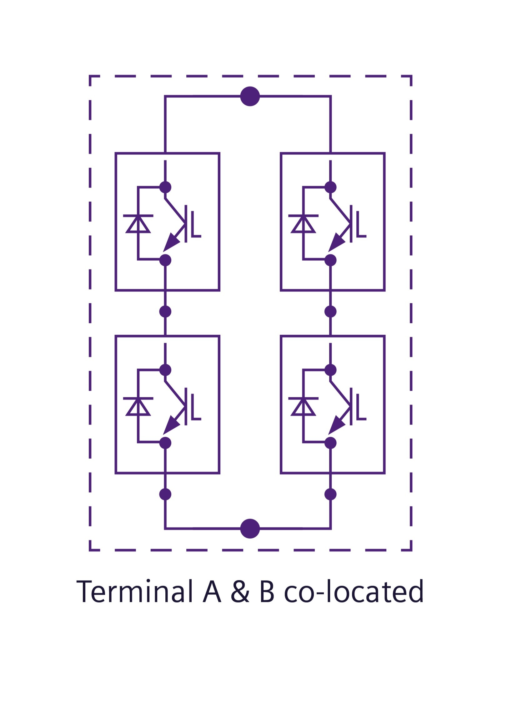

Siemens Energy (ENR)
W kontekscie: Naziemny bottleneck energetyczny i sieciowy
Czym jest spółka. Siemens Energy AG to wydzielony w 2020 r. ze Siemensa koncern dostarczający fizyczną infrastrukturę wytwarzania i przesyłu energii. Działa w czterech segmentach: Gas Services (GS) - turbiny gazowe i parowe, generatory oraz serwis floty; Grid Technologies (GT) - transformatory, rozdzielnice (switchgear), połączenia HVDC i grid interconnection; Transformation of Industry (TI) - sprężarki, elektrolizery, ogniwa paliwowe; oraz Siemens Gamesa (SG) - turbiny wiatrowe. Jeśli Bloom Energy sprzedaje „szybki megawat za licznikiem", to Siemens Energy dostarcza całą resztę łańcucha: od wielkoskalowej turbiny gazowej w cyklu kombinowanym (CCGT) jako źródła baseload, przez generator i system sterowania, aż po transformator i rozdzielnicę łączące kampus AI z siecią. Notowana na Deutsche Boerse (Xetra/Frankfurt, ticker ENR), z ekspozycją głównie europejsko-globalną, choć rdzeń popytu na AI bije dziś w USA.
Dlaczego to ważne dla centrów danych (data center, DC). Wąskim gardłem rozbudowy mocy dla AI nie jest dziś sama energia, lecz sprzęt, który ją wytworzy i przesyła - w wielkich turbinach gazowych Siemens Energy jest jednym z trzech kluczowych producentów oryginalnego sprzętu (OEM, original equipment manufacturer), a w infrastrukturze sieciowej należy do ważnych globalnych dostawców. Rynek wielkich turbin gazowych (>100 MW) to oligopol, w którym GE Vernova, Mitsubishi i Siemens Energy odpowiadają za ~90% zamówień od 2015 r. (🟠 IEEFA, paź 2025). Po drugiej stronie łańcucha leży deficyt transformatorów i rozdzielnic z wieloletnimi lead time'ami oraz zatkane kolejki przyłączeniowe - co rozwija wątek Brak transformatorów i switchgear: lead times oraz Kolejki przyłączeniowe i ograniczenia sieci. Zarząd wprost wiąże rekordowy wzrost zamówień z „gwałtownym wzrostem liczby centrów danych wspierających sztuczną inteligencję" (🔵 list do akcjonariuszy Q2 FY2026).
Mechanizm, który warto zrozumieć: popyt jest tak wysoki, że ograniczeniem stała się moc produkcyjna, nie zapotrzebowanie. W 2024 r. padło ~80 GW zamówień na turbiny gazowe wobec ~30 GW rocznej zdolności produkcyjnej całej trójki OEM, a od 2027 r. zamówienia mają przekroczyć 100 GW/rok (🟠 IEEFA, paź 2025). To odwraca logikę typowego cyklu inwestycyjnego: kto ma sloty produkcyjne i backlog, ten ma silniejszą pozycję negocjacyjną i większą selektywność zamówień. Wątek źródła baseload dla DC rozwija Energia: baseload, powrót do gazu/jądra, SMR dla DC.
Dla inwestora: ekspozycja Siemens Energy na temat jest pośrednia, ale strukturalna - spółka nie sprzedaje „rozwiązań DC", lecz turbiny i sprzęt sieciowy, na które popyt napędza właśnie AI. W warunkach, gdy bottleneckiem jest produkcja, a nie popyt, kluczowy staje się backlog i tempo rozbudowy mocy, nie cena jednostkowa.
Materiały spółki
Grafiki z materiałów spółki / IR (prawa właściciela, użycie redakcyjne). Pełny rejestr:
Spolki/assets/_licencje.json.

Turbina gazowa SGT-400 - pakiet przemysłowy. Źródło: assets.siemens-energy.com; licencja: materiały spółki / IR - prawa właściciela, użycie redakcyjne.

Elektrolizer PEM Silyzer - montaż stosu ogniw. Źródło: assets.siemens-energy.com; licencja: materiały spółki / IR - prawa właściciela, użycie redakcyjne.

Stacja konwerterowa HVDC - rozwiązanie Back-to-Back. Źródło: assets.siemens-energy.com; licencja: materiały spółki / IR - prawa właściciela, użycie redakcyjne.
Ekspozycja na temat w liczbach
Skala i dynamika. Rok obrotowy Siemens Energy kończy się 30 września. Za FY2025 (zakończony 30 wrz 2025) przychód wyniósł 39,1 mld EUR (39 077 mln), zamówienia 58,9 mld EUR (+17%), a backlog 138 mld EUR; zysk przed pozycjami specjalnymi skoczył ~6x do 2,36 mld EUR (marża 6,0%) (🔵 Annual Report 2025, audytowany). Najnowszy raportowany kwartał, Q2 FY2026 (zakończony 31 mar 2026), przyspieszył jeszcze bardziej: przychód 10 294 mln EUR (+8,9% porównywalnie), zamówienia 17 749 mln EUR (+29,5% porównywalnie), backlog 154 mld EUR, zysk przed pozycjami specjalnymi 1 164 mln EUR (marża 11,3%), zysk netto 835 mln EUR, a book-to-bill 1,72x (🔵 Earnings Release Q2 FY2026, 12 maja 2026, nieaudytowany). Wolne przepływy pieniężne przed opodatkowaniem wyniosły 1 975 mln EUR w Q2 i 4 844 mln EUR w H1 FY2026 (FCF po opodatkowaniu odpowiednio 1 716 mln i 4 523 mln EUR) (🔵 Earnings Release Q2 FY2026). Przy okazji wyników H1 zarząd podniósł guidance na FY2026: porównywalny wzrost przychodu do 14-16% (z 11-13%), marża zysku przed pozycjami specjalnymi 10-12% (z 9-11%), zysk netto ~4 mld EUR (z 3-4 mld EUR) oraz wolne przepływy pieniężne przed opodatkowaniem ~8 mld EUR (z 4-5 mld EUR) (🔵 Earnings Release Q2 FY2026).
Per segment (Q2 FY2026, mln EUR; marża = zysk przed pozycjami specjalnymi). Twardy obraz tego, gdzie bije popyt na DC (🔵 Earnings Release Q2 FY2026):
| Segment | Zamówienia | Przychód | Marża | Backlog | Book-to-bill |
|---|---|---|---|---|---|
| Gas Services | 8 869 | 3 478 | 15,9% | 66 mld | 2,55x |
| Grid Technologies | 6 996 | 3 067 | 17,1% | 49 mld | 2,28x |
| Transformation of Industry | 1 254 | 1 422 | 12,0% | 8 mld | 0,88x |
| Siemens Gamesa | 846 | 2 526 | -1,7% | 33 mld | 0,33x |
Guidance per segment na FY2026 (zaktualizowany): Gas Services - porównywalny wzrost przychodu 16-18%, marża 14-16%; Grid Technologies podniesiony do 25-27% wzrostu i marży 18-20% (z 19-21% wzrostu i 16-18% marży); Transformation of Industry 5-7% wzrostu i marża 11-13%; Siemens Gamesa 3-5% wzrostu (z 1-3%) i marża „na poziomie break-even" (🔵 Earnings Release Q2 FY2026).
xychart-beta
title "Przychody segmentow Siemens Energy FY2025 (mld EUR)"
x-axis ["Gas Services", "Grid Tech", "Siemens Gamesa", "Transf. of Industry"]
y-axis "mld EUR" 0 --> 14
bar [12.2, 11.3, 10.4, 5.7]
Rys. - Cztery segmenty FY2025; GS i GT to rdzeń ekspozycji na DC, SG (wiatr) to obciążenie. Suma segmentów (39,6 mld EUR) przewyższa przychód grupy (39,1 mld EUR) o eliminacje i uzgodnienia konsolidacyjne (transakcje między segmentami oraz pozycje centralne). Dane: 🔵 Siemens Energy Annual Report 2025.
Ile z tego to centra danych? NIE UJAWNIONE wprost - Siemens Energy nie raportuje osobnej linii „przychód z DC". Ekspozycję trzeba proxować przez segmenty. Dwa kluczowe to Gas Services (12,2 mld EUR, 31% przychodu grupy) i Grid Technologies (11,3 mld EUR, 29%) - razem 23,5 mld EUR, czyli ~60% przychodu grupy (🔵 Annual Report 2025). To one wytwarzają turbiny i sprzęt sieciowy dla DC. W ujęciu zamówień ich dominacja jest jeszcze wyraźniejsza.
pie title Udzial GS+GT w zamowieniach Q2 FY2026
"Gas Services + Grid Technologies" : 89
"Pozostale (TI + Siemens Gamesa)" : 11
Rys. - W Q2 FY2026 GS (8 869 mln EUR) i GT (6 996 mln EUR) wygenerowały 15 865 mln EUR zamówień z 17 749 mln EUR grupy, czyli ~89%. Dane: 🔵 Earnings Release Q2 FY2026.
Twardy sygnał z zamówień. W Q2 FY2026 book-to-bill wyniósł 2,55x dla GS i 2,28x dla GT (🔵 Q2 FY2026) - czyli oba segmenty zakontraktowały ponad dwukrotność tego, co zafakturowały, budując bufor backlogu na lata. Zarząd przypisał rekord zamówień GS „głównie popytowi z USA w powiązaniu z centrami danych oraz zamówieniom z Europy (np. Polska)", a wzrost transformatorów w GT „głównie popytowi z USA" (🔵 Q2 FY2026).
Ile to data center. Sam zarząd ujawnił, że ponad 25% portfela zamówień segmentu Gas Services jest związane z zasilaniem centrów danych; CEO Christian Bruch potwierdził, że „ponad jedna czwarta zamówień turbinowych pochodzi od klientów DC" (🟠 ad-hoc-news / Bloomberg, lut 2026). Przeliczenie na moc: w FY2025 GS pozyskał rekordowe zamówienia turbinowe, a w pierwszych sześciu tygodniach FY2026 zakontraktował 8 GW nowych turbin gazowych (🟠 stocksfoundry / Bloomberg, gru 2025); przy ~25% udziale DC daje to rząd kilku GW mocy turbinowej rocznie powiązanej z DC. Niezależny broker szacuje ~25% zamówień turbinowych Siemens Energy w FY2025 jako związane z DC (🟠 Zhongtai Securities / Futunn, 6 lut 2026) - implikuje to ~1 mld EUR rocznego przychodu z nowych jednostek GS bezpośrednio powiązanego z DC, przed sprzętem sieciowym i serwisem. To szacunki, nie guidance spółki; dokładna liczba EUR/GW per DC pozostaje NIE UJAWNIONA wprost.
Dla inwestora: brak osobnej linii „DC" oznacza, że ekspozycja jest realna, ale niemierzalna wprost - inwestor patrzy na proxy (udział GS+GT, book-to-bill, komentarz zarządu o USA). Strukturalnie ~60% przychodu i ~90% zamówień (Q2 FY2026) przechodzi przez segmenty bezpośrednio karmione popytem na AI compute.
Kluczowe umowy/wdrozenia - co znacza
Siemens Energy nie ujawnia wartości większości pojedynczych kontraktów DC, ale ujawnione wdrożenia pokazują, w jaki sposób spółka wchodzi w ten rynek - jako dostawca „wyspy energetycznej", nie operator.
- Eaton (czerwiec 2025): wspólnie zaprojektowana modułowa elektrownia gazowa 500 MW dla centrów danych, oparta na wielu jednostkach SGT-800; Eaton dostarcza switchgear, UPS, szyny prądowe i oprogramowanie (🟠 Data Center Dynamics). To rozwiązanie off-grid/za licznikiem - omija kolejkę przyłączeniową, co rozwija wątek Kolejki przyłączeniowe i ograniczenia sieci. Wartość NIE UJAWNIONA.
- Babcock & Wilcox / Applied Digital (sty 2026): dostawa zespołów turbina parowa + generator dla czterech gazowych bloków po 300 MW zasilających amerykańskie DC, cel 1 GW online do końca 2028 r. (🟠 IndexBox). Wartość NIE UJAWNIONA. Uwaga: link źródłowy IndexBox jest obecnie niedostępny (404); szczegóły (data, zakres mocy, rola Siemens Energy) wymagają potwierdzenia z raportu B&W (projekt Applied Digital w Dakocie Północnej).
- Xcel Energy (paź 2025): dziesięć turbin SGT6-5000F na ~2,08 GW mocy dyspozycyjnej (🟠 IndexBox). Wartość NIE UJAWNIONA.
- Rolls-Royce SMR (28 lut 2025): wyłączne partnerstwo na dostawę turbin parowych, generatorów i systemów pomocniczych dla małych reaktorów modułowych (SMR) Generacji 3+ (zakres 20-1 900 MW) (🔵 Siemens Energy press release, 28 lut 2025; podsumowanie 🟠 Turbomachinery Int., 20 kwi 2026). Opcja na przyszłe źródło baseload dla DC - patrz Energia: baseload, powrót do gazu/jądra, SMR dla DC.
Inwestycja w moc produkcyjną (3 lut 2026): Siemens Energy ogłosił 1 mld USD inwestycji w produkcję w USA i utworzenie ponad 1 500 wykwalifikowanych miejsc pracy, skoncentrowanych na turbinach gazowych i technologiach sieciowych, wprost wiążąc inwestycję z popytem na DC i elektryfikację (🔵 Siemens Energy press release US, 3 lut 2026). Zakres lokalizacji (🔵 press release; 🟠 power-eng, 3 lut 2026):
- Karolina Płn. (Charlotte, Winston-Salem, Raleigh): wznowienie produkcji turbin gazowych klasy F w Charlotte, rozbudowa produkcji i serwisu wielkich transformatorów, części turbinowe oraz inżynieria/B+R - ~500 miejsc pracy.
- Missisipi (rejon Richland): nowa fabryka wysokonapięciowych rozdzielnic (switchgear) z centrum szkoleniowym - do 300 miejsc pracy.
- Floryda (Tampa, Orlando): rozbudowa produkcji łopatek i kierownic turbin (Tampa), B+R i laboratorium cyfrowych technologii sieciowych z NVIDIA oraz przeniesienie zmodernizowanej siedziby USA do Lake Nona (Orlando).
- Alabama (Fort Payne): komponenty miedziane i izolacyjne do generatorów - ~120 miejsc pracy.
- Nowy Jork (Painted Post) i Teksas (Houston): modernizacja produkcji i serwisu sprzętu sprężarkowego dla rurociągów.
Harmonogram szczegółowy (daty uruchomienia poszczególnych fabryk) NIE UJAWNIONY - spółka podała jedynie, że plany zostały sfinalizowane na 3 lut 2026 (🔵 press release).
Moc produkcyjna wielkich turbin (>100 MW). Rozbudowa ma zwiększyć globalną zdolność o ~20%. W ujęciu jednostkowym: z ~35 turbin/rok w FY2024-2025 do ~50 turbin/rok w FY2027, a restart klasy F w Charlotte ma dodać kolejne 6-8 jednostek ponad ~50 wcześniej zapowiedzianych (Berlin). W ujęciu mocy: z ~25 GW w pierwotnym planie na FY2027 do „up to and beyond 30 GW" do 2030 r. (🟠 stocksfoundry/Bloomberg, gru 2025; 🟠 E&E News / power-eng, lut 2026). Dla turbin średnich plan zakłada wzrost do ~100 jednostek (z ~50 w FY2024).
Lead time / wypełnienie mocy. Popyt strukturalnie wyprzedza podaż: spółka zakontraktowała 8 GW w pierwszych sześciu tygodniach FY2026, a moce produkcyjne wielkich turbin są wyprzedane do 2028 r. - zarząd rezerwuje już sloty dostaw na 2029 r. i później (🟠 stocksfoundry/Bloomberg, gru 2025). To implikuje efektywny lead time rzędu trzech lat dla nowych zamówień turbinowych. Lead time'y dla transformatorów i switchgear pozostają wieloletnie (🟠 IEEFA), konkretne wartości w miesiącach NIE UJAWNIONE przez spółkę.
Dla inwestora: charakterystyczny dla Siemens Energy model to dostawa kompletnej wyspy energetycznej (turbina + generator + sterowanie + przyłącze), często w partnerstwie (Eaton). Brak ujawnionych wartości oznacza, że twardą metryką pozostaje agregat backlogu, nie pojedyncze kontrakty. Inwestycja 1 mld USD w USA to sygnał, że spółka traktuje capex na moc produkcyjną jako odpowiedź na bottleneck podażowy.
Pozycja rynkowa i udzialy
Pozycja Siemens Energy jest najsilniejsza tam, gdzie temat boli najbardziej - w wielkich turbinach gazowych i w sprzęcie sieciowym.
- Wielkie turbiny gazowe (>100 MW): oligopol trzech graczy. GE Vernova, Mitsubishi i Siemens Energy odpowiadają za ~90% zamówień od 2015 r. (🟠 IEEFA, paź 2025).
- Udziały OEM FY2025 (szacunek brokera): GE Vernova 34%, Siemens Energy 27%, Mitsubishi 24% (🟠 Zhongtai Securities / Futunn, 6 lut 2026).
- Szerszy rynek turbin gazowych: Siemens Energy ~17% udziału, 194 turbiny sprzedane w FY2025 - prawie dwukrotnie więcej niż 100 jednostek w FY2024 (🟠 Fact.MR, 25 maja 2026).
- Serwis floty: przychód serwisowy to ~66% sprzedaży segmentu GS (🔵 Annual Report 2025) - długoterminowe umowy serwisowe i części zamienne tworzą rekurencyjny strumień, który rośnie wraz z instalowaną bazą.
pie title Udzialy OEM wielkich turbin gazowych FY2025 (szacunek)
"GE Vernova" : 34
"Siemens Energy" : 27
"Mitsubishi" : 24
"Pozostali" : 15
Rys. - Oligopol trójki OEM; udziały szacunkowe, nie audytowane. Dane: 🟠 Zhongtai Securities / Futunn.
Przewaga technologiczna. Flagowa SGT5-9000HL (do 593 MW) jest rekordzistą Guinnessa pod względem sprawności bloku w cyklu kombinowanym (Keadby 2, 64,18% zweryfikowane w maju 2024) a turbiny klasy HL oferują dziś do 30% współspalania wodoru z mapą drogową do 100% (🔵 HL-class Fact Sheet). Spółka może dostarczyć całą wyspę energetyczną - turbinę gazową, parową, generator, sterowanie (Omnivise T3000) i przyłącze sieciowe - w jednym pakiecie, redukując ryzyko interfejsów dla deweloperów DC (🔵 materiały produktowe).
Dla inwestora: w niszy wielkich turbin Siemens Energy jest jednym z trzech graczy zdolnych w ogóle realizować zamówienia tej skali - to wysoka bariera wejścia oparta na wieloletnio budowanej flocie referencyjnej, certyfikacji i mocy produkcyjnej, nie na cenie. W grid interconnection i transformatorach rywalizuje z Hitachi Energy i ABB o ten sam zatkany rynek (patrz Brak transformatorów i switchgear: lead times).
Mechanika konkurencji - na osiach
Siemens Energy konkuruje na dwóch frontach łańcucha DC: o wytwarzanie (turbiny) i o sieć (transformatory, HVDC, switchgear).
Turbiny gazowe - oligopol trójki:
| Konkurent | Na czym konkuruje | Pozycja (liczby) |
|---|---|---|
| GE Vernova (GEV) | Największy rywal globalny; flota klasy HA, silne pozycjonowanie w USA pod DC | ~34% udziału OEM FY2025 (🟠 Futunn); ~55 GW backlogu gazowego (🟠 IEEFA) |
| Mitsubishi (MHI) | Turbiny klasy J chłodzone powietrzem; silny w Azji i na Bliskim Wschodzie | ~24% udziału OEM FY2025 (🟠 Futunn) |
| Siemens Energy | Pełna wyspa energetyczna, rekord sprawności CCGT (64,18%) | ~27% udziału OEM FY2025; 194 turbiny FY2025 (🟠 Futunn / Fact.MR) |
| Ansaldo / BHEL / Solar Turbines (Caterpillar) | Gracze regionalni i mniejsze turbiny dystrybuowane | Udziały NIE UJAWNIONE |
Sieć i infrastruktura elektryczna:
| Konkurent | Na czym konkuruje |
|---|---|
| Hitachi Energy | Globalny lider HVDC i transformatorów - główny rywal w przyłączach DC do sieci |
| Schneider Electric | Dystrybucja mocy w DC, UPS, switchgear, oprogramowanie |
| Eaton | Partner przy 500 MW modułowej elektrowni, jednocześnie rywal w elektrycznym balance-of-plant |
| ABB | HVDC, automatyka sieciowa, transformatory |
Dynamika konkurencji - oś czasu i mocy produkcyjnej. Kluczowa oś rywalizacji to nie cena, lecz zdolność dostarczenia: ~80 GW zamówień turbinowych w 2024 r. wobec ~30 GW rocznej produkcji trójki OEM, z prognozą >100 GW/rok od 2027 r. (🟠 IEEFA). Stąd wyścig na capex produkcyjny: Siemens Energy planuje +20% globalnej zdolności wielkich turbin (z ~35 do ~50 jednostek/rok w FY2027, z ~25 do ponad 30 GW do 2030 r.) i rozbudowę footprintu w USA w ramach inwestycji 1 mld USD (🟠 stocksfoundry/Bloomberg, gru 2025; 🟠 power-eng, lut 2026). Mimo to moce są wyprzedane do 2028 r., a sloty rezerwowane są już na 2029 r. (🟠 stocksfoundry, gru 2025). Druga oś to flota referencyjna i sprawność - rekord 64,18% SGT5-9000HL przekłada się na niższy całkowity koszt posiadania (TCO) paliwowy dla operatora baseload.
Dla inwestora: w obecnym cyklu wygrywa nie ten, kto tnie cenę, lecz ten, kto ma sloty produkcyjne i backlog - dlatego rywalizacja przeniosła się na inwestycje w moc wytwórczą. Partner-rywal Eaton pokazuje, że granice konkurencji w warstwie elektrycznej są płynne.
Koncentracja odbiorcow i ryzyka z mechanizmem
Koncentracja geograficzna. Siemens Energy nie ujawnia koncentracji pojedynczych klientów, ale ujawnia regionalną: region Ameryk to ~37% zamówień FY2025 (21,8 mld EUR), a same USA ~29% (17,0 mld EUR) (🔵 Annual Report 2025). USA to rynek, gdzie deficyt mocy dla DC jest szczególnie widoczny - wpływy zamówień z USA więcej niż podwoiły się r/r w Q2 FY2026 (🔵 Q2 FY2026). To koncentruje ekspozycję na temat właśnie tam, gdzie bottleneck jest szczególnie wyraźny.
Ryzyka z mechanizmem. Wszystkie liczby z FY2025 Annual Report (sekcja ryzyk, raport zarządu) uzupełnione komentarzem Q2.
- Spuścizna wiatru (Siemens Gamesa). Mechanizm: wady jakościowe platformy onshore i aktualizacje gwarancyjne generują straty i pochłaniają zysk rdzennych segmentów. Kwantyfikacja: Siemens Gamesa straciła 1,36 mld EUR przed pozycjami specjalnymi w FY2025 (🔵 Annual Report 2025). W Q2 FY2026 strata zawęziła się do -44 mln EUR (marża -1,7%) z -249 mln EUR rok wcześniej, głównie dzięki poprawie produktywności i efektywności kosztowej; pojawiły się pierwsze zamówienia na platformę SG 7.0 (następca 5.X) (🔵 Q2 FY2026). Backlog SG to 33 mld EUR, ale book-to-bill spadł do 0,33x (🔵 Q2 FY2026). Zarząd po raz pierwszy podniósł guidance segmentu, zakładając na FY2026 porównywalny wzrost przychodu 3-5% i marżę „na poziomie break-even" (🔵 Earnings Release Q2 FY2026) - sygnał, że ścieżka do wyjścia z czerwieni jest celowana na FY2026, choć segment wciąż pod kreską H1. Zwężenie strat SG było jednym z głównych czynników skokowego wzrostu FCF grupy. To pokazuje, że nawet przy boomie GS/GT jeden segment potrafił rozchwiać wynik grupy, ale jego ciężar maleje.
- Łańcuch dostaw i moc produkcyjna. Mechanizm: ograniczenia mocy, niedobory materiałów, wydłużone lead time'y i ryzyko niewypłacalności dostawców tworzą wąskie gardła produkcyjne i kompresję marży. Kwantyfikacja: spółka dodała „moc produkcyjną" jako nowy istotny temat ryzyka w FY2025 (🔵 Annual Report 2025); marża nowych jednostek GS w Q2 FY2026 była już ściśnięta miksem (15,9% wobec 16,1% rok wcześniej) mimo wyższego wolumenu (🔵 Q2 FY2026). Bezpośrednio łączy się z Brak transformatorów i switchgear: lead times.
- Cła i polityka handlowa. Mechanizm: bariery handlowe i napięcia geopolityczne podnoszą koszty wejściowe i opóźniają projekty. Kwantyfikacja: zarząd wskazał (maj 2025), że bezpośredni wpływ ceł na zysk w H2 FY2025 to kwota „w wysokich dziesiątkach milionów euro" (do ~100 mln EUR) (🟠 Renewables Now); raport roczny odnotowuje negatywny wpływ ceł na GS, GT i SG (🔵 Annual Report 2025).
- Cykliczność / plateau popytu DC. Mechanizm: spowolnienie inwestycji hyperscalerów lub niepewność makro mogą obniżyć popyt. Kwantyfikacja: raport roczny wprost flaguje ryzyko, że „rynki mogą zostać dotknięte zmniejszonym popytem na moc ze strony centrów danych, szczególnie jeśli hyperscalerzy ograniczą inwestycje w infrastrukturę energetyczną" (🔵 Annual Report 2025). To bezpośrednie ostrzeżenie, że teza DC jest cykliczna - rozwija je Zapotrzebowanie DC na moc i prognozy AI compute.
- Wykonanie projektów (>100 mln EUR). Mechanizm: przekroczenia kosztów, defaulty partnerów, wyzwania placowe. Wskaźnik: standardowy proces zatwierdzania ofert i organizacja project-excellence, ale długoterminowe kontrakty offshore SG wymagają klauzul indeksacji i podziału ryzyka wobec inflacji kosztów (🔵 Annual Report 2025).
- Ryzyko finansowe. Mechanizm: obniżka ratingu podniosłaby koszty gwarancji i finansowania. Wskaźnik: rating poprawił się do S&P BBB (z BBB- na FY2025) i Moody's Baa1 (z Baa2) wg stanu na HY2026; nowa zakontraktowana linia gwarancyjna 9 mld EUR łagodzi to ryzyko, a bilans wspiera skorygowana gotówka netto, która wzrosła do ~7,55 mld EUR na koniec Q2 FY2026 (z +4,79 mld EUR na koniec FY2025) (🔵 Half-year Financial Report 2026; 🔵 Annual Report 2025).
Dla inwestora: najważniejszy mechanizm ryzyka to napięcie między popytem a zdolnością - ten sam bottleneck podażowy, który dziś napędza marże, jutro może je ścisnąć, jeśli ramp produkcji pogorszy miks (sygnał już widoczny w GS Q2 FY2026). Drugie to cykliczność: spółka sama ostrzega przed plateau inwestycji hyperscalerów. Trzecie - „ogon" Siemens Gamesa, który potrafi zjeść zysk rdzenia.
Powiązane spółki
Inne notowane spółki z raportu dzielące z tą firmą co najmniej jeden wątek tematyczny (wspólny rynek, technologia lub łańcuch wartości).
- Bloom Energy Corporation (BE) - Ogniwa paliwowe SOFC dla centrów danych
Wspólne wątki: Naziemny bottleneck. - Constellation Energy Corporation (CEG) - Największy operator floty jądrowej w USA (PPA z hyperskalerami)
Wspólne wątki: Naziemny bottleneck. - Eaton Corporation plc (ETN) - Zasilanie DC (UPS, switchgear) + chłodzenie (Boyd Thermal)
Wspólne wątki: Naziemny bottleneck. - GE Vernova Inc. (GEV) - Turbiny gazowe i infrastruktura sieciowa dla DC
Wspólne wątki: Naziemny bottleneck. - Oklo Inc. (OKLO) - Mikroreaktory (SMR/fission) na potrzeby DC
Wspólne wątki: Naziemny bottleneck. - Schneider Electric SE (SU) - Zasilanie i chłodzenie DC (EcoStruxure, Motivair)
Wspólne wątki: Naziemny bottleneck. - Talen Energy Corporation (TLN) - Energia jądrowa (Susquehanna), sąsiedztwo z DC
Wspólne wątki: Naziemny bottleneck. - Vertiv Holdings Co (VRT) - Zasilanie i precyzyjne/cieczowe chłodzenie DC
Wspólne wątki: Naziemny bottleneck.
Slowniczek
Terminy techniczne tej notatki linkowane są do wspólnego słownika vaultu. Kluczowe dla Siemens Energy:
- CCGT - turbina gazowa w cyklu kombinowanym (z odzyskiem ciepła w turbinie parowej); sprawność ~60%+, skala elektrowni. Flagowa SGT5-9000HL osiąga rekordowe 64,18%.
- baseload - moc podstawowa, ciągła; turbiny gazowe i SMR jako źródło stałego zasilania DC.
- switchgear - rozdzielnica; aparatura łączeniowa i zabezpieczająca w przyłączu/substacji.
- grid interconnection - przyłączenie do sieci przesyłowej (transformatory, HVDC); element zatkanej kolejki.
- time-to-power - czas od decyzji do uzyskania dostępnej mocy (kluczowy dla deweloperów DC ścigających się z kolejką przyłączeniową).
- TCO - całkowity koszt posiadania (w tym paliwo, gdzie liczy się sprawność turbiny); odrębne pojęcie od time-to-power.
- backlog - portfel zamówień (138 mld EUR FY2025, 154 mld EUR Q2 FY2026).
- book-to-bill - stosunek zamówień do przychodu; >1 oznacza narastanie backlogu.
- capex - nakłady inwestycyjne, tu m.in. na rozbudowę mocy produkcyjnej turbin.
- hyperscaler - giganci chmury (Microsoft, Google, Amazon, Oracle) - główne źródło popytu na DC.
- SMR - mały reaktor modułowy; Siemens Energy dostarcza „wyspę konwencjonalną" (turbiny/generatory) dla Rolls-Royce SMR.
Zrodla
- 🔵 Siemens Energy - Annual Report 2025 (audytowane sprawozdanie, segmenty s. 195, raport ryzyk s. 39-42) - https://assets.siemens-energy.com/dam/32b27e9a-af91-4915-8b51-b3af012d0d98/A-Siemens_Energy_Annual_Report_2025-pdf_Original%20file.pdf
- 🔵 Siemens Energy - Earnings Release Q2 FY2026 (12 maja 2026, nieaudytowany; dane per segment, FCF, podniesiony guidance grupy i segmentów, Gamesa break-even) - https://assets.siemens-energy.com/dam/fb695b3d-e910-4f47-81b5-b4480034f6a1/Earnings-Release-Q2-FY26-EN-pdf_Original%20file.pdf
- 🔵 Siemens Energy - list do akcjonariuszy Q2 FY2026 (22 maja 2026) - https://assets.siemens-energy.com/dam/352bf02e-bbc1-4061-b00d-b45200cd6b3b/2026-05-22-Shareholder-Letter-Q2-FY2026_EN-pdf_Original%20file.pdf
- 🔵 Siemens Energy - Half-year Financial Report 2026 (HY2026; ratingi S&P BBB / Moody's Baa1, gotówka netto ~7,55 mld EUR, podniesiony guidance FY2026) - https://www.siemens-energy.com/global/en/home/investor-relations/publications.html
- 🔵 Siemens Energy - SGT5-9000HL / HL-class Fact Sheet (sprawność >64%) - https://assets.siemens-energy.com/dam/6a81abd9-6c46-42c9-9034-b036013f322b/210923-HL-ClassFactSheet-05-pdf_Original%20file.pdf
- 🔵 Siemens Energy - Keadby 2 (rekord Guinnessa CCGT 64,18%) - https://www.siemens-energy.com/global/en/home/references/keadby2-power-generation.html
- 🟠 IEEFA - Global Gas Turbine Shortages (paź 2025; oligopol ~90%, 80 GW vs 30 GW) - https://ieefa.org/sites/default/files/2025-10/IEEFA%20Report_Global%20gas%20turbine%20shortages%20add%20to%20LNG%20challenges%20in%20Vietnam%20and%20the%20Philippines_October2025.pdf
- 🟠 Zhongtai Securities via Futunn (6 lut 2026; udziały OEM 34/27/24%, ~25% zamówień DC) - https://news.futunn.com/en/post/68545413/zhongtai-securities-ai-drives-up-global-gas-turbine-demand-focus
- 🟠 Fact.MR - Gas Turbine Market (25 maja 2026; ~17% udziału, 194 turbiny FY2025) - https://www.factmr.com/report/gas-turbine-market
- 🟠 Data Center Dynamics - partnerstwo Eaton 500 MW (9 cze 2025) - https://www.datacenterdynamics.com/en/news/siemens-energy-eaton-partner-on-offgrid-natural-gas-power-plant-for-data-center-sector/
- 🟠 IndexBox - turbiny dla Babcock & Wilcox / Applied Digital (9 sty 2026) - https://www.indexbox.io/blog/siemens-energy-to-supply-turbines-for-babcock-wilcox-data-center-power-project/
- 🔵 Siemens Energy - press release „Siemens Energy is investing 1 billion USD and creating highly skilled jobs in the United States" (3 lut 2026; lokalizacje, >1500 etatów, switchgear Missisipi, restart turbin Charlotte) - https://www.siemens-energy.com/us/en/home/press-releases/siemens-energy-is-investing--1-billion-and-creating-highly-skill.html
- 🟠 power-eng - „Siemens Energy to invest 1B in U.S. manufacturing" (3 lut 2026; lokalizacje, etaty) - https://www.power-eng.com/gas/turbines/siemens-energy-to-invest-1b-in-u-s-manufacturing-as-grid-gas-turbine-demand-rises/
- 🟠 stocksfoundry / Bloomberg - „Siemens Energy Signals Capacity Sold Out Through 2028, Books 8 GW in Six Weeks" (gru 2025; 35->50 jednostek FY2027, ~25->30+ GW do 2030, restart Charlotte +6-8, wyprzedane do 2028, sloty 2029) - https://www.stocksfoundry.com/articles/siemens-energy-signals-capacity-sold-out-through-2028-books-8-gw-in-six-weeks-20251218
- 🟠 E&E News by POLITICO - „Siemens Energy to spend 1B expanding US turbine and grid factories" (lut 2026) - https://www.eenews.net/articles/siemens-energy-to-spend-1b-expanding-us-turbine-and-grid-factories/
- 🟠 ad-hoc-news / Bloomberg - „Siemens Energy CEO Warns Germany Is Falling Behind as AI Boom Fuels a Quarter of Gas Turbine Orders" (lut 2026; >25% portfela GS to DC) - https://www.ad-hoc-news.de/boerse/news/ueberblick/siemens-energy-ceo-warns-germany-is-falling-behind-as-ai-boom-fuels-a/69546987
- 🟠 IndexBox/Bloomberg - inwestycja 1 mld USD w USA (3 lut 2026) - https://www.indexbox.io/blog/siemens-energy-invests-1-billion-in-us-manufacturing-for-gas-turbines-grid-tech/
- 🔵 Siemens Energy - press release „Siemens Energy to supply Rolls-Royce with turbines for Small Modular Reactors" (28 lut 2025) - https://www.siemens-energy.com/global/en/home/press-releases.html
- 🟠 Turbomachinery International - podsumowanie partnerstwa Rolls-Royce SMR (20 kwi 2026) - https://www.turbomachinerymag.com/view/siemens-energy-to-supply-steam-turbines-for-rolls-royce-smr-s-nuclear-power-plants
- 🟠 Renewables Now - wpływ ceł USA (8 maja 2025) - https://renewablesnow.com/news/siemens-energy-expects-limited-financial-impact-from-us-tariffs-1274947/
Notatki wlasne
(sekcja poza zarzadzaniem skilla - miejsce na reczne notatki uzytkownika)
Linkują tutaj
11 powiązanych notatek
- Mapa raportu Orbitalne / kosmiczne centra danych
- Sekcja Naziemny bottleneck energetyczny i sieciowy
- Indeks Spółki z ekspozycją na giełdy europejskie
- Spółka Bloom Energy (BE)
- Spółka Constellation Energy (CEG)
- Spółka Eaton (ETN)
- Spółka GE Vernova (GEV)
- Spółka Oklo (OKLO)
- Spółka Schneider Electric (SU)
- Spółka Talen Energy (TLN)
- Spółka Vertiv (VRT)